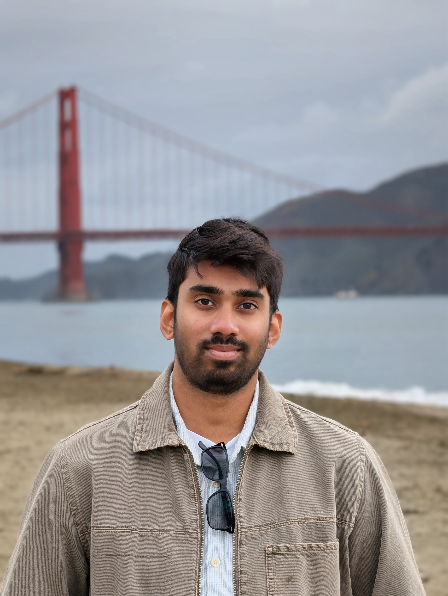

Hi! I was most recently a Software Engineer - ML at Sedai, where I was building intelligent LLM routing systems that dynamically select across models based on query complexity and cost budgets, autonomous optimization engines for Databricks, and observability tooling for AI agents. I spent most of my time thinking about how to make agentic workflows cheaper, faster, and more reliable. I am currently looking for my next thing focused on RL post-training, video/worlds models, inference engineering, etc., if you have something interesting, please reach out!
Before Sedai, I was a founding ML engineer at Floma, where I worked on building multimodal LLM agents that programmatically generate marketing creatives like display ads. Prior to that, I spent a year as a research assistant at MBZUAI with Dr. Salman Khan, working on various problems in computer vision and ml — that's where I built PromptIR, a prompt-learning framework for blind image restoration that was published at NeurIPS 2023.
I did my masters at NYU Courant in Computing, Entrepreneurship, and Innovation and was awarded the M. Michael Waller Fellowship. Over the years I've had the opportunity to publish research at venues like NeurIPS, CVPR, and BioNLP — spanning image restoration, composed video retrieval, sketch-based retrieval, and clinical NLP with some amazing collaborators.

When I'm not working, I'm usually gaming. I play a lot of Dota 2 — it's the kind of game where you're constantly making calls with incomplete information, and every match feels different. I also love roguelites like Hades and Slay the Spire for similar reasons; every run is a fresh puzzle.
I'm a big fantasy reader. Currently working through Ken Liu's The Dandelion Dynasty — it's an epic that blends silkpunk technology, political philosophy, and a retelling of early Chinese history. Before that it was a lot of Sanderson. I love worldbuilding that takes its internal logic seriously and stories that ask hard questions about power, duty, and what it costs to change the world.
I'm also fascinated by history — especially the ancient world, the rise and fall of empires, and how civilizations shaped the ideas we still argue about today. A lot of the fantasy I read draws from real history, and going back to the source material is half the fun.
When I need to get away from screens entirely, I go hiking. There's nothing like a long trail to clear your head. I also enjoy sci-fi, astronomy rabbit holes, and film when I find the time.